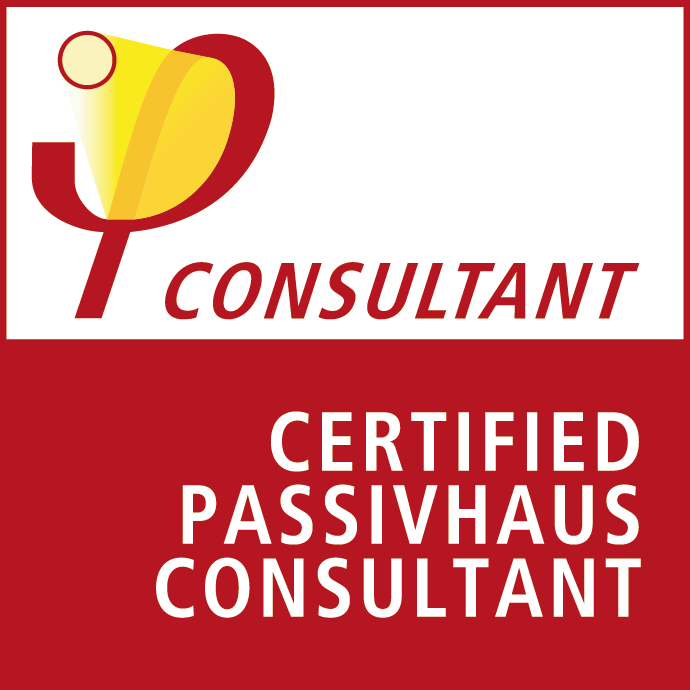

About me
I specialise in digital research, design and innovation for social impact.
I've worked across public, private and social development sectors with organisations such as the Australian National University (ANU), CSIRO Data61, National ICT Australia (NICTA), Microsoft Australia, the Australian Government, Stamford Interactive, and as an independent consultant.
Prior to founding Cam Grant Design, I secured grants from the Australian Government to establish and lead the Asia-Pacific Data for Development (D4D) Initiative at ANU. The initiative brokered new partnerships between Australia and key regional organisations, expanded access to data, design skills and technology, and provided direct support for new data-driven responses to pressing development challenges across developing regions of Asia and the Pacific.
Current focus
I'm currently exploring opportunities for digital technology to help communities improve energy and materials use, reduce embodied and operational emissions, build resilience and adapt to climate change.
My initial focus is on the built environment. Topics of interest include high-performance housing, integrated design, retrofitting, indoor environment quality, occupant health and comfort, occupant operation, behavioural and biophilic design.
 I'm a Certified Passivhaus Consultant (Designer #P16220) and member of the Australian Passivhaus Association. I'm not a practicing Passivhaus consultant, but if you're interested in Passivhaus I'm more than happy to share knowledge and connect you with the right people.
Get in touch
Feel free to get in touch via studio@camgrant.com.